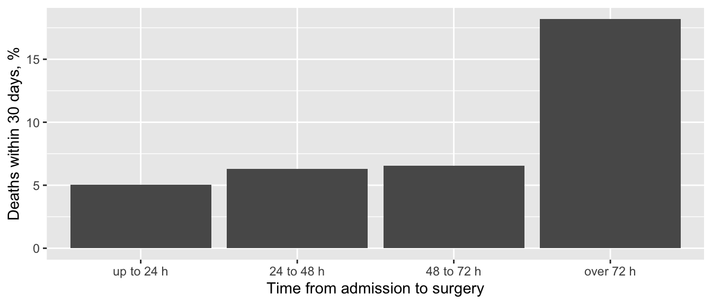
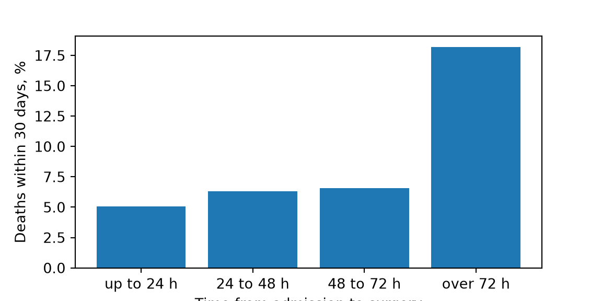
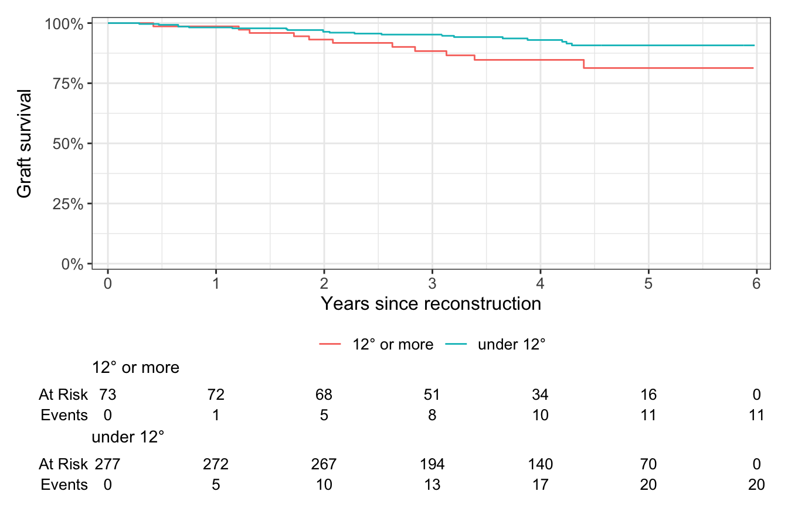
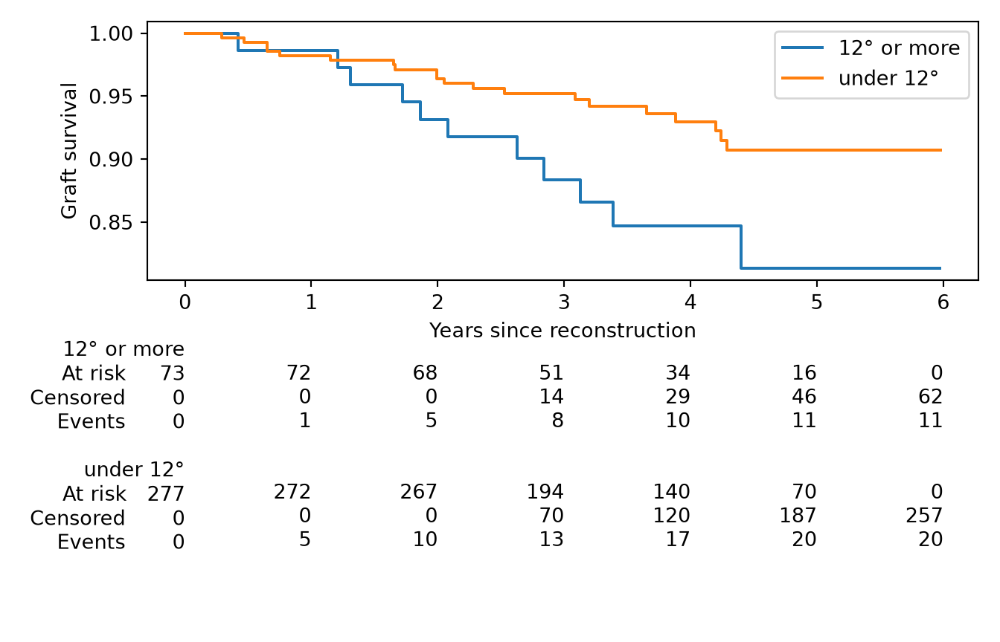

Simple linear and nonlinear regression, nonparametric regression, simple logistic regression and Cox regression: how an outcome changes with one predictor.
A correlation (page 10) says how strongly two things go together. Regression says how much the outcome changes for each unit of the predictor, and lets you predict the outcome for a new patient. Which regression depends on the outcome: a measurement on a straight line or a curve, a measurement that isn’t normal, a yes/no outcome, or time until an event. With several predictors at once, see page 12.
Note💡 How every section on this page works
Each section answers one question about one of the practice’s datasets: the joint replacement cohort and PROMs, hip fracture for logistic regression, ACL reconstructions for Cox regression. Its first code block loads the packages and the data, so you can jump straight to the section you need. Run that section’s blocks in order, top to bottom.
To keep the code short, the joint replacement examples use every case, including both cases of patients who had both sides operated on (80 patients in the whole cohort; page 2 counts them). In a real study, decide how to handle them (page 3) and say what you did.
Simple linear regression
The question: How much longer does the operation take for each extra point of BMI?
When to use it
The outcome is a measurement, and you want to know how much it changes per unit of one predictor, or to predict it.
The relationship is roughly a straight line, and each patient’s outcome is independent of the others’.
The residuals (each patient’s distance from the line) are roughly normal, with a similar spread all along the line. Check them after fitting.
Linear regression draws the straight line that fits the points best, and then asks how sure we can be of its slope.
For any line you could draw, measure each patient’s vertical distance from it: the residual.
Square the residuals and add them up. The least-squares line is the one line for which this sum is as small as possible. Software finds it with a formula, not by trial and error.
The slope of that line says how much the outcome changes, on average, for each extra unit of the predictor. The line always passes through the point where both variables are at their mean.
The test asks whether the slope is further from 0 than chance would explain: t = slope ÷ its standard error, turned into a p-value. The standard error is smaller with more patients, with less scatter around the line, and with a wider spread of the predictor.
Once the model has run, a box under “Read the output” rebuilds the line by hand.
Intercept = 42.8: the predicted operative time at a BMI of 0. That’s impossible, so on its own it means nothing; it anchors the line.
bmi = 1.37: the slope. Each extra kg/m² of BMI goes with 1.37 more minutes of operative time, on average.
Std. Error 0.11, t = 12.4, p < 0.001 (R prints <2e-16, Python 0.000): the slope’s uncertainty, and the test of whether it’s zero (no relationship).
95% CI 1.15 to 1.58 (R’s confint(); Python’s [0.025 0.975] columns).
R-squared = 0.20: BMI accounts for a fifth of the variation in operative time.
Residual standard error 14.7 (R only): the typical distance of a patient’s operative time from the line, in minutes.
Everything else (R’s residual quartiles, significance stars and F-statistic; Python’s Omnibus, Durbin-Watson, Jarque-Bera, AIC and BIC): you can ignore it for a model with one predictor. With one predictor, the F test repeats the test of the slope.
bmi_mean <-mean(cohort$bmi)time_mean <-mean(cohort$op_time_min)slope_by_hand <-sum((cohort$bmi - bmi_mean) * (cohort$op_time_min - time_mean)) /sum((cohort$bmi - bmi_mean)^2) # step 2: the slope that makes the sum of squared residuals smallestintercept_by_hand <- time_mean - slope_by_hand * bmi_mean # step 3: the line passes through the two meansresiduals_by_hand <- cohort$op_time_min - (intercept_by_hand + slope_by_hand * cohort$bmi) # step 1: each procedure's distance from that linec(intercept = intercept_by_hand, slope = slope_by_hand)
intercept slope
42.832447 1.368005
1-sum(residuals_by_hand^2) /sum((cohort$op_time_min - time_mean)^2) # R-squared: 1 minus the share of the variation left around the line
[1] 0.2041497
sqrt(sum(residuals_by_hand^2) / (600-2)) # residual standard error: the typical size of a residual (600 procedures)
[1] 14.675
bmi_mean = cohort["bmi"].mean()time_mean = cohort["op_time_min"].mean()slope_by_hand = ((cohort["bmi"] - bmi_mean) * (cohort["op_time_min"] - time_mean)).sum() / ((cohort["bmi"] - bmi_mean) **2).sum() # step 2: the slope that makes the sum of squared residuals smallestintercept_by_hand = time_mean - slope_by_hand * bmi_mean # step 3: the line passes through the two meansresiduals_by_hand = cohort["op_time_min"] - (intercept_by_hand + slope_by_hand * cohort["bmi"]) # step 1: each procedure's distance from that lineprint(intercept_by_hand, slope_by_hand)
42.83244721241382 1.3680052814211727
print(1- (residuals_by_hand **2).sum() / ((cohort["op_time_min"] - time_mean) **2).sum()) # R-squared: 1 minus the share of the variation left around the line
0.20414965725326328
print(np.sqrt((residuals_by_hand **2).sum() / (600-2))) # residual standard error: the typical size of a residual (600 procedures)
14.675003191131317
The by-hand line has an intercept of 42.8 and a slope of 1.37, as in the output. R² is 1 minus the share of the variation that is left around the line: 0.20. The residual standard error, 14.7 minutes, is the typical size of a residual.
Before trusting the line, plot the residuals against the fitted values: they should form a band of even width around 0, with no curve.
They do here: an even band, with no curve and no funnel shape.
Effect size and 95% CI
The slope with its 95% CI is the effect size: 1.37 minutes per kg/m² (95% CI 1.15 to 1.58). Scale it to a difference that matters clinically: 5 kg/m² of BMI goes with 5 × 1.368 = 6.8 more minutes (95% CI 5 × 1.151 = 5.8 to 5 × 1.585 = 7.9). The slope and both ends of its CI are multiplied by 5, using the unrounded numbers in the output. R² = 0.20 says how much of the variation the line explains.
How to report it
Methods: Operative time was modeled on BMI with simple linear regression.
Results: The slope of operative time on BMI was 1.37 minutes per kg/m² (95% CI 1.15 to 1.58; p < 0.001; R² = 0.20), or 6.8 minutes (95% CI 5.8 to 7.9) per 5 kg/m².
Warning⚠️ Watch out: the line is an average, and only inside your data
The line predicts the average operative time at each BMI. Individual patients scatter around it by about 15 minutes either way (the residual standard error), so it’s a poor tool for scheduling one patient’s case. And BMI here runs from 18.0 to 44.5 (printed under “Look at the data first”): don’t use the line to predict outside that range.
Nonlinear regression
The question: How quickly does KOOS JR recover after knee replacement, and where does it level off?
When to use it
The outcome follows a curve whose shape you know in advance, and the curve’s numbers mean something: here a starting score, a plateau and a recovery rate.
You supply the formula and rough starting guesses, and the program finds the values that fit best (nonlinear least squares).
τ (tau): the time constant. After τ days patients have made 63% of their eventual gain (1 − e−1 = 0.63), and half of it after τ × ln 2 ≈ 0.69 τ days.
What the test really does
Nonlinear regression fits a curve the way linear regression fits a line: by making the squared distances between the points and the curve as small as possible.
Start from your rough guesses for the curve’s numbers (here plateau, start and τ) and draw that curve.
Measure each score’s vertical distance from the curve, square the distances and add them up.
Change the numbers a little in the direction that makes the sum smaller, and repeat. For a curve there is no formula that gives the answer in one step, which is why the program needs starting guesses.
Stop when no small change makes the sum any smaller: the fit has converged. The numbers at that point are the estimates.
Once the model has run, a box under “Read the output” shows the sum for the starting guesses and for the fitted curve.
1146 scores from 330 knees. The scores climb steeply over the first 3 months, then more slowly toward 1 year: a curve that levels off, not a straight line. Each knee has up to four scores, one per visit (the last table).
squared_distance <-function(plateau, start, tau) { # step 2: the sum of squared distances between the scores and a curvesum((koos$prom_score - (plateau - (plateau - start) *exp(-koos$days / tau)))^2)}fit <-coef(recovery)squared_distance(85, 50, 100) # step 1: the curve drawn from the starting guesses
[1] 176095.1
squared_distance(fit[["plateau"]], fit[["start"]], fit[["tau"]]) # step 4: the curve the program settled on
[1] 173841.5
squared_distance(fit[["plateau"]], fit[["start"]], 60) # the same curve with tau moved to 60 days: worse again
def squared_distance(plateau, start, tau): # step 2: the sum of squared distances between the scores and a curvereturn ((koos["prom_score"] - recovery_curve(koos["days"], plateau, start, tau)) **2).sum()print(squared_distance(85, 50, 100)) # step 1: the curve drawn from the starting guesses
176095.08873316215
print(squared_distance(*estimates)) # step 4: the curve the program settled on
173841.4891850255
print(squared_distance(estimates[0], estimates[1], 60)) # the same curve with tau moved to 60 days: worse again
The starting guesses give a sum of 176095. The fitted curve brings it down to 173841, and no other values of the three numbers give a smaller sum: moving τ from 80.9 to 60 days, for example, raises it to 181009. Dividing the smallest sum by 1146 − 3 and taking the square root gives the residual standard error, 12.33 points.
Effect size and 95% CI
The curve’s numbers, with their 95% CIs, are the effect sizes. Half of the eventual gain comes after τ × ln 2 days.
low high
plateau 82.561762 85.850467
start 48.495962 51.159541
tau 69.941098 91.787025
print(np.log(2) * estimates[2]) # days to half of the eventual gain
56.05069619705848
print(np.log(2) * (estimates[2] - t_crit * standard_errors[2]), np.log(2) * (estimates[2] + t_crit * standard_errors[2])) # its 95% CI
48.479474903009695 63.62191749110726
KOOS JR rose from about 49.8 points (95% CI 48.5 to 51.2) on the day of surgery toward a plateau of 84.2 (95% CI 82.6 to 85.9). Half of the gain came by about 56 days, 8 weeks (95% CI 49 to 64 days). Python’s CI for the half-gain time, computed differently, is 48 to 64 days: see the R vs Python box.
How to report it
Methods: KOOS JR was modeled against days since surgery with an exponential recovery curve fitted by nonlinear least squares, counting the pre-op score as the score on the day of surgery.
Results: In 330 knees (1146 scores), the fitted curve gave an estimated KOOS JR of 49.8 points (95% CI 48.5 to 51.2) at surgery and a plateau of 84.2 points (95% CI 82.6 to 85.9); half of the change was reached at about 56 days (95% CI 49 to 64).
Warning⚠️ Watch out: each knee appears up to four times
Each knee has up to four scores (pre-op, 6 weeks, 3 months and 1 year). Nonlinear least squares treats the 1146 scores as 1146 independent patients, but they come from 330 knees, and scores from the same knee are related. So these CIs can’t be trusted: depending on the number, they may be too narrow or too wide. A mixed model (page 16) accounts for this. And if the fit fails to converge, try starting guesses closer to what the plot shows.
Tip🔀 R vs Python: two kinds of CI
R’s nls() and scipy’s curve_fit() use different fitting algorithms but find the same estimates and standard errors.
R’s confint()profiles the fit: it moves each number away from its estimate until the fit gets significantly worse. scipy gives only the standard errors, so the Python code uses estimate ± t × standard error. The two CIs differ slightly; here τ’s CI runs from 71.0 to 92.5 days in R and 69.9 to 91.8 in Python, so the CI for the half-gain time is 49 to 64 days in R and 48 to 64 in Python. Either is fine; say which you used.
Nonparametric regression
The question: How does KOOS JR at 1 year depend on KOOS JR before surgery, when many patients reach the ceiling of 100?
When to use it
The outcome is a measurement that isn’t normal: it has a ceiling, a skew or outliers, so the residuals of a straight line won’t be normal.
LOWESS (locally weighted smoothing) draws the shape without a formula: it fits many small lines, each to the points near it, and joins them into a smooth curve. It gives a picture, not a p-value.
The Theil-Sen slope is the median of the slopes between every pair of patients. A few extreme patients barely move it, and its CI comes from ranks, not from normal residuals.
This section uses two tools, and neither assumes normal residuals.
LOWESS takes one patient at a time and fits a straight line to the patients whose pre-op score is nearest (here the nearest two-thirds), giving the closest ones the most weight. It keeps only that line’s height at the patient’s own pre-op score.
Joining these heights gives a smooth curve that follows the data wherever they go. LOWESS gives a picture, with no slope and no p-value.
The Theil-Sen slope takes every pair of patients and works out the slope of the line through the two of them. The 246 knees here make 30135 pairs.
It then takes the median of all these slopes. A few unusual patients change only a few of the pairwise slopes, so they barely move the median.
The R code under “Run it” does steps 3 and 4 by hand.
library(tidyverse)proms <-read_csv("data/proms_long.csv", show_col_types =FALSE)koos_wide <- proms |>filter(instrument =="KOOS JR", visit %in%c("preop", "1yr")) |>select(case_id, visit, prom_score) |>pivot_wider(names_from = visit, values_from = prom_score) |># one row per kneerename(one_year =`1yr`) |>filter(!is.na(preop), !is.na(one_year))smooth <-lowess(koos_wide$preop, koos_wide$one_year) # LOWESS curve, R's defaultsggplot(koos_wide, aes(preop, one_year)) +geom_point(alpha =0.4) +geom_line(data =tibble(preop = smooth$x, one_year = smooth$y), linewidth =1) +labs(x ="KOOS JR before surgery", y ="KOOS JR at 1 year")

nrow(koos_wide)
[1] 246
sum(koos_wide$one_year ==100) # at the ceiling
[1] 37
smooth$y[c(1, length(smooth$y))] # the curve's height at the lowest and highest pre-op score
[1] 70.09071 98.55335
import numpy as npimport pandas as pdimport matplotlib.pyplot as pltfrom scipy import statsfrom statsmodels.nonparametric.smoothers_lowess import lowessproms = pd.read_csv("data/proms_long.csv")koos_wide = (proms[(proms["instrument"] =="KOOS JR") & proms["visit"].isin(["preop", "1yr"])] .pivot(index="case_id", columns="visit", values="prom_score") # one row per knee .dropna(subset=["preop", "1yr"]))smooth = lowess(koos_wide["1yr"], koos_wide["preop"], frac=2/3, it=3, delta=0.01* np.ptp(koos_wide["preop"])) # R's lowess() defaultsfig, ax = plt.subplots(figsize=(6, 3.5))ax.scatter(koos_wide["preop"], koos_wide["1yr"], alpha=0.4)ax.plot(smooth[:, 0], smooth[:, 1], linewidth=2)ax.set_xlabel("KOOS JR before surgery")ax.set_ylabel("KOOS JR at 1 year")plt.show()

print(len(koos_wide), (koos_wide["1yr"] ==100).sum()) # knees, at the ceiling
246 37
print(smooth[[0, -1], 1]) # the curve's height at the lowest and highest pre-op score
[70.09071294 98.55334783]
246 knees have both scores, and 37 of them (37 ÷ 246 = 15.0%) score the maximum of 100 at 1 year. The LOWESS curve rises steadily from about 70 to about 99 across the range of pre-op scores (the last line of output: 70.1 and 98.6).
slope = 0.39: each extra point before surgery goes with 0.39 more points at 1 year (the median of all the pairwise slopes).
intercept = 65.4: the predicted 1-year score for a pre-op score of 0; it anchors the line.
low, high (R) or low_slope, high_slope (Python): the 95% CI for the slope, 0.27 to 0.52.
Effect size and 95% CI
The Theil-Sen slope with its CI is the effect size: 0.39 points at 1 year per pre-op point (95% CI 0.27 to 0.52). An ordinary least-squares line gives 0.43 (the code below fits it); the two would differ more if a few unusual patients pulled the least-squares line.
coef(lm(one_year ~ preop, data = koos_wide)) # the least-squares line, for comparison: its slope is the number under preop
(Intercept) preop
62.7022110 0.4280834
print(stats.linregress(koos_wide["preop"], koos_wide["1yr"]).slope) # the least-squares slope, for comparison
0.42808344542661636
How to report it
Methods: Because 1-year KOOS JR clustered at the ceiling, its relationship with pre-op KOOS JR was described with a LOWESS smoother and summarized with the Theil-Sen slope.
Results: Among 246 knees, 37 (15.0%) scored 100 at 1 year. The Theil-Sen slope of the 1-year KOOS JR on the pre-op KOOS JR was 0.39 points per point (95% CI 0.27 to 0.52).
Warning⚠️ Watch out: robust isn’t ceiling-proof
Theil-Sen resists outliers, but nothing can see above a ceiling: the 37 knees at 100 might have scored higher on a longer scale, so the true slope at the top of the range is unknown. And a LOWESS curve is least reliable at its two ends, where it rests on few patients.
Tip🔀 R vs Python: Theil-Sen in R, and LOWESS settings
Theil-Sen in R: some R packages get the CI wrong when scores are tied, as PROM scores always are (deming 1.4-1 misapplies its tie correction; mblm’s CI is far too narrow). So the R code computes the slope and Sen’s CI directly, the same way scipy does, and the two agree exactly.
Intercept: scipy’s default (method="separate") computes it as median(y) − slope × median(x). The R code computes median(y − slope × x), which scipy calls method="joint". The slope is the same either way.
LOWESS: R’s lowess() and statsmodels’ lowess() run the same algorithm, but statsmodels’ defaults differ (it sets delta to 0), so the Python code spells out R’s settings. ggplot2’s geom_smooth() uses a different smoother, loess(), which draws a similar but not identical curve.
Simple logistic regression
The question: Does the risk of death within 30 days rise with the time to surgery?
When to use it
The outcome is yes/no (died or not), and you want the odds ratio per unit of one predictor.
It assumes the log odds change in a straight line with the predictor: each extra day of delay multiplies the odds by the same amount.
You need enough patients with the outcome: a common rule of thumb is at least 10 per predictor.
Logistic regression draws a straight line too, but on a scale where a yes/no outcome can follow one: the log odds.
A risk can’t follow a straight line for long, because it has to stay between 0% and 100%. So the model works with the odds (the risk divided by 1 minus the risk) and then with their logarithm, the log odds, which can take any value.
The model assumes the log odds change in a straight line with the predictor: log odds = intercept + coefficient × predictor.
It tries out values for the intercept and the coefficient, and keeps the pair under which the outcomes that really happened (who died and who survived), taken together, were most likely. This is called maximum likelihood.
Adding the coefficient to the log odds is the same as multiplying the odds by e raised to the coefficient. That number is the odds ratio per unit of the predictor.
Once the model has run, a box under “Read the output” turns the two coefficients into predicted risks by hand.
Look at the data first
The model uses time to surgery as a number, in units of 24 hours, so the odds ratio is per day of delay. The bands are only for the picture.
library(tidyverse)hip_fracture <-read_csv("data/hip_fracture.csv", show_col_types =FALSE) |>mutate(hours_24 = hours_to_surgery /24) # time in days, so the odds ratio is per 24 hoursby_delay <- hip_fracture |>mutate(delay_band =cut(hours_to_surgery, breaks =c(-Inf, 24, 48, 72, Inf),labels =c("up to 24 h", "24 to 48 h", "48 to 72 h", "over 72 h"))) |>group_by(delay_band) |>summarise(n =n(), deaths =sum(death_30d), percent =100*mean(death_30d))by_delay
# A tibble: 4 × 4
delay_band n deaths percent
<fct> <int> <dbl> <dbl>
1 up to 24 h 574 29 5.05
2 24 to 48 h 460 29 6.30
3 48 to 72 h 122 8 6.56
4 over 72 h 44 8 18.2
c(deaths =sum(hip_fracture$death_30d), patients =nrow(hip_fracture), percent =100*mean(hip_fracture$death_30d)) # all patients
ggplot(by_delay, aes(delay_band, percent)) +geom_col() +labs(x ="Time from admission to surgery", y ="Deaths within 30 days, %")
import numpy as npimport pandas as pdimport matplotlib.pyplot as pltimport statsmodels.formula.api as smfhip_fracture = pd.read_csv("data/hip_fracture.csv")hip_fracture["hours_24"] = hip_fracture["hours_to_surgery"] /24# time in days, so the odds ratio is per 24 hoursbands = pd.cut(hip_fracture["hours_to_surgery"], bins=[-np.inf, 24, 48, 72, np.inf], labels=["up to 24 h", "24 to 48 h", "48 to 72 h", "over 72 h"])by_delay = hip_fracture.groupby(bands, observed=True)["death_30d"].agg(n="count", deaths="sum", percent="mean")by_delay["percent"] =100* by_delay["percent"]print(by_delay)
n deaths percent
hours_to_surgery
up to 24 h 574 29 5.052265
24 to 48 h 460 29 6.304348
48 to 72 h 122 8 6.557377
over 72 h 44 8 18.181818
print(hip_fracture["death_30d"].sum(), len(hip_fracture), 100* hip_fracture["death_30d"].mean()) # all patients: deaths, patients, percent
74 1200 6.166666666666667
fig, ax = plt.subplots(figsize=(6, 3))bars = ax.bar(by_delay.index.astype(str), by_delay["percent"])ax.set_xlabel("Time from admission to surgery")ax.set_ylabel("Deaths within 30 days, %")plt.show()
Within 30 days, 29 of the 574 patients operated on within 24 hours died (5.1%), and 8 of the 44 operated on after more than 72 hours (18.2%); 74 of 1,200 overall, or 6.2% (the line under the table).
hours_24 = 0.41: the change in the log odds of death within 30 days per 24 hours of delay. Log odds are hard to read, so turn the coefficient into an odds ratio (next step).
Std. Error 0.11, z = 3.78, p < 0.001: the test of whether time to surgery matters at all.
Intercept = −3.29: the log odds at surgery on admission (0 hours), which only anchors the line.
Null and residual deviance (R): the misfit of the model without and with time to surgery. Their difference, 555.67 − 543.20 = 12.47 on 1 degree of freedom, is the likelihood ratio test of the model. Python prints its p-value as LLR p-value (0.0004). With one predictor it says the same as the z test above.
Note🔍 Under the hood: from the coefficients to a predicted risk, by hand
days <-c(0, 1, 2, 4) # surgery after 0, 1, 2 and 4 dayslog_odds <-coef(delay_model)[["(Intercept)"]] +coef(delay_model)[["hours_24"]] * days # step 2: the straight line on the log-odds scaleodds <-exp(log_odds) # undo the logarithmrbind(days, log_odds, odds, risk_percent =100* odds / (1+ odds)) # odds back to a risk: odds ÷ (1 + odds)
odds[2] / odds[1] # step 4: 1 more day multiplies the odds by this
[1] 1.503725
days = np.array([0, 1, 2, 4]) # surgery after 0, 1, 2 and 4 dayslog_odds = delay_model.params["Intercept"] + delay_model.params["hours_24"] * days # step 2: the straight line on the log-odds scaleodds = np.exp(log_odds) # undo the logarithmprint(pd.DataFrame({"days": days, "log_odds": log_odds, "odds": odds, "risk_percent": 100* odds / (1+ odds)}).T) # odds back to a risk: odds ÷ (1 + odds)
print(odds[1] / odds[0]) # step 4: 1 more day multiplies the odds by this
1.5037252135499246
For surgery on the day of admission the model predicts a risk of 3.6%; after 1 day 5.3%, after 2 days 7.8% and after 4 days 16.0%. The log odds rise by the same 0.41 with each day, so the odds are multiplied by the same 1.50 each time. The risk itself doesn’t rise by a fixed amount, which is why the result is reported as an odds ratio.
Each 24 hours of delay multiplied the odds of death within 30 days by 1.50 (95% CI 1.21 to 1.85).
How to report it
Methods: The association between time from admission to surgery and death within 30 days was estimated with logistic regression, with time in 24-hour units.
Results: Within 30 days, 74 of 1,200 patients died (6.2%). The odds ratio for death per 24 hours of delay to surgery was 1.50 (95% CI 1.21 to 1.85; p < 0.001).
Warning⚠️ Watch out: a straight line on the log-odds scale is an assumption
The model says each 24 hours multiplies the odds by the same 1.50. That’s an assumption, and the bands above can’t test it by eye. The last band is open-ended: its patients waited 97 hours on average, so a straight line already predicts its higher rate (17.2% from the model, 18.2% observed; the code below computes all three numbers). To test the shape, let the effect bend and compare the two fits, as exercise 3 on page 12 does with splines. An odds ratio isn’t a risk ratio: the two are close only when the outcome is rare, as it is here (6.2%). And it isn’t proof of cause: patients too unwell to operate on may wait longer, and they’d die more often whenever they were operated on.
over_72 <- hip_fracture$hours_to_surgery >72# the open-ended last bandmean(hip_fracture$hours_to_surgery[over_72]) # its mean wait, in hours
[1] 97.26818
100*mean(fitted(delay_model)[over_72]) # the death rate the model predicts for these patients, %
[1] 17.19794
100*mean(hip_fracture$death_30d[over_72]) # the death rate observed, %
[1] 18.18182
over_72 = hip_fracture["hours_to_surgery"] >72# the open-ended last bandprint(hip_fracture.loc[over_72, "hours_to_surgery"].mean()) # its mean wait, in hours
97.26818181818182
print(100* delay_model.predict(hip_fracture[over_72]).mean()) # the death rate the model predicts for these patients, %
17.19793824332725
print(100* hip_fracture.loc[over_72, "death_30d"].mean()) # the death rate observed, %
18.181818181818183
Tip🔀 R vs Python: profile and Wald CIs
R’s confint() on a glm()profiles the likelihood, which is more accurate in small samples. statsmodels’ conf_int() uses the simpler Wald method (estimate ± 1.96 standard errors), which gives 1.22 to 1.86 here; R’s confint.default() does the same. Say which you used.
Cox regression
The question: Does the hazard of ACL graft failure rise with posterior tibial slope?
When to use it
The outcome is time until an event (graft failure), and the predictor is a measurement (tibial slope).
Cox regression gives a hazard ratio per unit of the predictor. Choose a unit that means something: here, per degree.
It assumes the hazard ratio stays the same over time (proportional hazards) and that the log hazard changes in a straight line with slope. Page 14 shows how to check both and covers Cox regression in full.
Deaths are censored in any Cox model of another event. That hardly matters in young ACL patients, who rarely die during follow-up. In older patients it does: the hazard ratio then describes the rate among patients still alive, and a patient’s actual chance of the event needs the cumulative incidence or a Fine-Gray model.
What the test really does
The Cox model works as on page 8, with a measurement in place of groups.
Start at surgery and move forward in time. Each time a graft fails, look at who was still being followed just before it: the patients at risk.
The model assumes each extra degree of slope multiplies the hazard by the same factor, the hazard ratio. A patient whose slope is 2° steeper has the hazard multiplied by that factor twice.
It tries out values for the hazard ratio and keeps the one under which the failures that really happened, taken together, were most likely: at each failure, was it one of the steeper slopes among the patients at risk?
The test asks whether that hazard ratio is further from 1 than chance would explain, and gives a p-value.
A patient who leaves the study early is censored: they count among the patients at risk for as long as they were followed, and not after.
Look at the data first
Splitting slope in two is only for the picture; the model uses slope as a number.
library(tidyverse)library(survival)library(ggsurvfit)acl <-read_csv("data/acl_cohort.csv", show_col_types =FALSE) |>mutate(slope_group =if_else(tibial_slope_deg >=12, "12° or more", "under 12°")) # for the plot onlysurvfit2(Surv(followup_years, graft_failure) ~ slope_group, data = acl, conf.type ="log-log") |>ggsurvfit() +add_risktable() +scale_ggsurvfit() +labs(x ="Years since reconstruction", y ="Graft survival")

import pandas as pdimport matplotlib.pyplot as pltfrom lifelines import KaplanMeierFitter, CoxPHFitterfrom lifelines.plotting import add_at_risk_countsacl = pd.read_csv("data/acl_cohort.csv")acl["slope_group"] = acl["tibial_slope_deg"].map(lambda slope: "12° or more"if slope >=12else"under 12°") # for the plot onlyfig, ax = plt.subplots(figsize=(7, 4.5))curves = []for group_name, group in acl.groupby("slope_group"): km = KaplanMeierFitter(label=group_name).fit(group["followup_years"], group["graft_failure"]) km.plot_survival_function(ax=ax, ci_show=False) curves.append(km)ax.set_xlabel("Years since reconstruction")ax.set_ylabel("Graft survival")add_at_risk_counts(*curves, ax=ax)plt.tight_layout()plt.show()

11 of the 73 reconstructions with a slope of 12° or more failed, and 20 of the 277 with a smaller slope. The table under the plot gives these counts: the numbers at risk at year 0 (73 and 277) and the events by the end of follow-up (11 and 20).
overall = slope_cox.log_likelihood_ratio_test() # overall likelihood ratio testprint(overall.test_statistic, overall.degrees_freedom, overall.p_value) # its statistic, degrees of freedom and p-value
exp(coef) = 1.27: the hazard ratio per degree of tibial slope: the hazard of graft failure is 1.27 times higher for a slope 1° steeper.
lower .95 / upper .95 = 1.09 to 1.48: the 95% CI, which excludes 1 (no difference). R prints 1.095 and 1.485, which are 1.0946 and 1.4847 already rounded (Python shows more digits), so don’t round them a second time.
Pr(>|z|) = 0.002: the p-value for slope.
Likelihood ratio test = 10.1 on 1 df, p = 0.002: the overall test; with one predictor it says the same as the p-value for slope. R prints it as 10.08 on 1 df, p=0.002; Python prints the statistic, its degrees of freedom and the p-value on the line under its table. R’s first line, n= 350, number of events= 31, gives the reconstructions and the failures; Python prints them last.
Concordance = 0.67 (R only): how often the model ranks two patients’ graft failure times correctly. 0.5 is a coin toss, so slope alone is better than a coin toss, but far from a prediction for one patient. R prints 0.665 (0.6654 before rounding).
Effect size and 95% CI
The hazard ratio per degree, 1.27 (95% CI 1.09 to 1.48), is the effect size. Hazard ratios multiply: a slope 5° steeper carries 3.37 times the hazard (95% CI 1.57 to 7.21), computed from the unrounded hazard ratio raised to the power 5: 1.27485 = 3.37. The code below does the same for the CI.
exp(5*coef(slope_cox)) # the hazard ratio for 5° more slope: the per-degree ratio to the power 5
tibial_slope_deg
3.366859
exp(5*confint(slope_cox)) # its 95% CI
2.5 % 97.5 %
tibial_slope_deg 1.571142 7.214967
print(slope_cox.summary[["exp(coef)", "exp(coef) lower 95%", "exp(coef) upper 95%"]] **5) # the hazard ratio for 5° more slope, with its 95% CI: each number to the power 5
Methods: The association between posterior tibial slope and ACL graft failure was estimated with Cox proportional hazards regression, with slope in degrees.
Results: The hazard ratio for graft failure per degree of posterior tibial slope was 1.27 (95% CI 1.09 to 1.48; p = 0.002), with 31 failures in 350 reconstructions.
Warning⚠️ Watch out: a hazard ratio isn’t a treatment effect
Slope wasn’t assigned: patients with a steep slope may differ in other ways. A hazard ratio of 1.27 per degree doesn’t show that an osteotomy reducing the slope by 1° would lower the hazard by that much. Only a study of the osteotomy itself can show that. At about 10 failures per term, the 31 failures here allow about three terms (page 14).
Tip🔀 R vs Python: lifelines stops early
lifelines stops iterating slightly early by default, so the Python code tightens it with fit_options={"precision": 1e-9}. Here that changes nothing visible; on page 12 it does.
Exercises
The solutions use the packages and data loaded in the sections above, so run the page from the top first.
1. How much does operative time change with age? Fit a simple linear regression and report the slope with its 95% CI.
Intercept 68.516766
age 0.243639
dtype: float64
0 1
Intercept 59.347054 77.686479
age 0.105113 0.382165
Intercept 7.264537e-42
age 5.910612e-04
dtype: float64
0.019561620543887215
Results: The slope of operative time on age was 0.24 minutes per year (95% CI 0.11 to 0.38; p < 0.001; R² = 0.02).
That’s about 2.4 minutes per decade, and age explains only 2% of the variation, against 20% for BMI. Both programs print the p-value as 5.910612e-04, which is 0.00059, so p < 0.001.
2. A colleague asks whether older hip fracture patients are more likely to die within 30 days. Which regression would you use, and what do you find?
TipSolution
The outcome is yes/no and the predictor is a measurement: simple logistic regression. 74 deaths are plenty for one predictor.
hip_fracture <- hip_fracture |>mutate(age_10 = age /10) # age in decades, so the odds ratio is per 10 yearsdeath_model <-glm(death_30d ~ age_10, family = binomial, data = hip_fracture)exp(cbind(odds_ratio =coef(death_model), confint(death_model)))
Estimate Std. Error z value Pr(>|z|)
(Intercept) -8.1215742 1.5214064 -5.338202 9.387307e-08
age_10 0.6308177 0.1743343 3.618437 2.963876e-04
hip_fracture["age_10"] = hip_fracture["age"] /10# age in decades, so the odds ratio is per 10 yearsdeath_model = smf.logit("death_30d ~ age_10", data=hip_fracture).fit(disp=False)death_ors = np.exp(pd.concat([death_model.params, death_model.conf_int()], axis=1))death_ors.columns = ["odds_ratio", "low", "high"]print(death_ors, death_model.pvalues, sep="\n")
Results: In 270 hips (906 scores), the fitted curve gave an estimated HOOS JR of 45.6 points (95% CI 44.2 to 46.9) at surgery and a plateau of 87.9 points (95% CI 86.3 to 89.4); half of the change was reached at about 37 days (95% CI 33 to 41).
The CIs are R’s profile CIs; Python’s, computed from the standard errors, round to the same numbers here.
Hips seem to recover faster than knees (half the gain by about 5 weeks, against 8). To test that difference, fit both in one model (page 12).